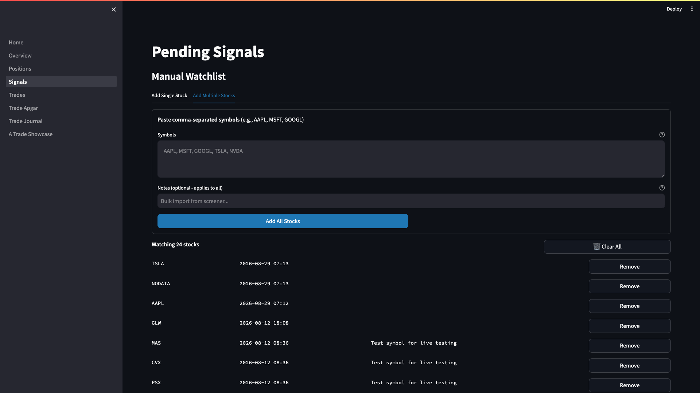
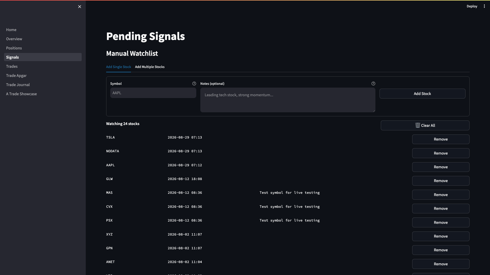

Weekly Watchlist Management User Guide
Version: 1.0 | Last Updated: 2026-09-08 | Audience: Triple Screen Traders
Overview
The manual watchlist is the foundation of your weekly Triple Screen workflow. Every weekend, you scan the market for stocks with strong relative strength, then update your watchlist with the best candidates. The system monitors these stocks for Screen 1 (weekly trend) and Screen 2 (daily pullback) signals.
Use this guide to: - Run the weekly relative strength scan - Generate comma-separated symbol lists using Claude Code - Add/remove symbols from your manual watchlist - Verify your watchlist changes took effect - Trigger signal scans after updating
Quick Start
Goal: Update your watchlist with this week's best stocks in 10 minutes
- Run weekly EMA-26 + MACD histogram scan (Sunday evening)
- Copy comma-separated symbol list from scan output
- Paste symbols into dashboard "Add Multiple Stocks" tab
- Remove any outdated symbols manually
- Verify watchlist count updated
Result: Fresh watchlist ready for Monday's signal scan
Step-by-Step Instructions
Task 1: Run Weekly Relative Strength Scan
Purpose: Identify stocks with sustained uptrends and early bullish momentum
Steps:
- SSH into your VPS (or run locally if testing):
- Activate Python environment and run scan:
Look for: Scan output showing stocks sorted by MACD histogram change
- Review scan criteria displayed at the top:
Criteria:
1. EMA-26 rising for 3 consecutive weeks
2. MACD histogram uptick (current > previous)
3. MACD histogram below zero (current < 0)
- Check the results table:
The scan shows: - Rank (by MACD histogram change) - Symbol and company name - Sector - Current price - EMA-26 current vs previous - MACD histogram current vs previous
- Find the comma-separated list at the bottom:
Comma-separated symbols (for copy/paste):
----------------------------------------
AAPL, MSFT, GOOGL, AMZN, NVDA, META, TSLA, ...
Result: You have a comma-separated list of symbols ready to paste into the dashboard
Task 2: Add Symbols to Manual Watchlist (Bulk)
Purpose: Quickly populate your watchlist with scan results
Steps:
- Open the Signals page in your dashboard:
Navigate to: http://your-vps-ip:8501 (or localhost:8501 for local)
Click Pending Signals in the sidebar
Look for: "Manual Watchlist" section at the top of the page
- Click the "Add Multiple Stocks" tab
Look for: Text area labeled "Symbols" with placeholder "AAPL, MSFT, GOOGL, TSLA, NVDA"

- Paste your comma-separated symbol list from the scan:
- Add optional notes (applies to all symbols):
- Click "Add All Stocks" button
Look for: Progress bar showing validation and insertion
-
Review results:
-
Green success message: "Added N stocks: AAPL, MSFT, ..."
- Yellow warning: "Skipped N (already in watchlist): ..."
- Red error: "Invalid N symbols: ..." (with reasons)
Result: All valid symbols from your scan are now in the watchlist
Tips:
💡 Tip: The dashboard validates each symbol against the market database before adding. Invalid symbols are rejected with clear error messages.
💡 Tip: Duplicate symbols are automatically skipped (no error). You can re-paste the same list without issues.
Common Mistake: Pasting symbols with extra whitespace or formatting from spreadsheets. The dashboard auto-trims whitespace, but check for special characters if you see validation errors.
Task 3: Add Single Symbol to Watchlist
Purpose: Manually add individual stocks you want to monitor
Steps:
- Click the "Add Single Stock" tab in the Manual Watchlist section

- Enter the stock symbol in the "Symbol" field:
Symbol will be auto-uppercased (aapl → AAPL)
- Add notes (optional but recommended):
- Click "Add Stock" button
Result: Symbol added to watchlist if valid, error message if already exists or invalid
Task 4: Remove Symbols from Watchlist
Purpose: Clean up symbols that no longer meet your criteria
Steps:
- Review the watchlist table on the Signals page
Table shows: - Symbol - Date added - Notes - Remove button
- Click "Remove" button next to any symbol you want to delete
Look for: Confirmation message "Removed SYMBOL"
- Page refreshes automatically showing updated watchlist
Remove symbols when: - Stock broke below weekly EMA-26 - MACD histogram turned negative for 2+ weeks - Sector rotation out of favor - You reached position limit for that sector
Result: Symbol removed from watchlist (soft delete - data retained in database)
Task 5: Clear Entire Watchlist (Bulk Cleanup)
Purpose: Start fresh for a new week or strategy change
Steps:
- Locate the watchlist count header:
-
Click "Clear All" button (trash icon)
-
Confirm in the success message:
WARNING: This removes ALL symbols from your watchlist. Use this carefully. The system performs a soft delete (data retained in database with removed_at timestamp).
Result: Watchlist is empty and ready for new symbols
Task 6: Verify Watchlist Updated
Purpose: Confirm your changes took effect before signal scanning
Steps:
- Check the watchlist count at the top of the Signals page:
Verify this matches your expected count
-
Scroll through the watchlist table to verify symbols:
-
All expected symbols present
- No unexpected symbols
-
Notes saved correctly
-
Optional: SSH to VPS and query database directly:
psql -d supertrader_portfolio -c "
SELECT symbol, added_at, notes
FROM manual_watchlist
WHERE is_active = TRUE
ORDER BY added_at DESC;
"
Look for: List of all active watchlist symbols with timestamps
Result: Confident your watchlist is correct before Monday's signal scan
Task 7: Trigger Signal Scan (After Watchlist Update)
Purpose: Generate new signals from your updated watchlist
Steps:
- Wait for daily data refresh to complete:
Data pipeline runs at 6:00 PM ET daily
Check logs: tail -f /var/log/triple-screen/data-refresh.log
- Run signal scan manually (or wait for automated scan at 6:30 PM ET):
- Review scan output:
STOCKS PASSING SCREENS 1 & 2 (2026-09-08)
============================================================
AAPL
MSFT
NVDA
Total: 3 signals
============================================================
- Check Pending Signals in dashboard:
Navigate to Signals page → "Signals Awaiting Breakout" section
Look for: New signals with today's date
Result: Fresh signals generated from your updated watchlist, ready for Screen 3 breakout monitoring
Tips & Best Practices
💡 Tip: Run the weekly scan every Sunday evening after market close. This gives you time to review results and update the watchlist before Monday morning.
💡 Tip: Keep notes when adding symbols. Document WHY you're adding each stock (sector rotation, earnings catalyst, technical setup). This helps during post-trade review.
💡 Tip: Review your watchlist every weekend. Remove stocks that no longer meet criteria even if they haven't triggered signals. This keeps scan times fast and signals high-quality.
💡 Tip: Aim for 30-50 stocks in your watchlist. Too few = missed opportunities. Too many = diluted focus and slower scans.
💡 Tip: Use sector diversity. Avoid loading up on one sector (max 30% allocation per sector recommended).
Common Mistake: Forgetting to remove symbols after they trigger signals. The system automatically skips symbols with open positions, but cleaning up your watchlist manually keeps it organized.
Common Mistake: Adding symbols without verifying they exist in the market database. Always use the dashboard's bulk add feature (validates automatically) rather than manual SQL inserts.
Troubleshooting
Problem: Scan script fails with "MARKET_DATABASE_URL not set in environment"
Solution:
1. Check .env file exists in backend/ directory
2. Verify MARKET_DATABASE_URL is set:
Problem: Symbol validation fails: "Symbol not found in database"
Solution: 1. Verify symbol is correct (check Yahoo Finance or Google Finance) 2. Check if symbol exists in market database:
3. If missing, run symbol universe refresh:Problem: Bulk add shows "Invalid N symbols" but symbols look correct
Solution: 1. Check for hidden characters (copy/paste from spreadsheet can add special chars) 2. Manually type one symbol to verify dashboard is working 3. Re-run weekly scan script to regenerate clean comma-separated list 4. If issue persists, check browser console for JavaScript errors (F12 → Console)
Problem: Watchlist count doesn't update after adding symbols
Solution:
1. Hard refresh browser: Ctrl+Shift+R (Windows) or Cmd+Shift+R (Mac)
2. Clear Streamlit cache: Dashboard may be showing cached data (1-hour TTL)
3. Check database directly:
Problem: Signal scan shows 0 signals after updating watchlist
Solution: 1. Verify watchlist is not empty:
Check "universe_loaded" log entry shows count > 0 2. Confirm daily data is current: Should show yesterday's date (data lags by 1 day) 3. Lower scan criteria temporarily to verify system is working: - EditTrendValidator min_ema_length to 10 weeks (from 13)
- Re-run scan to see if any signals appear
FAQ
Q: How often should I update my watchlist?
A: Update every Sunday evening after running the weekly scan. This ensures you're monitoring the strongest stocks entering the new week. Mid-week updates are rare unless major market events occur (sector rotation, earnings surprises).
Q: What's the difference between removing from watchlist vs canceling pending signals?
A: - Remove from watchlist: Stops monitoring the stock for NEW signals. Existing open positions are unaffected. - Cancel pending signal: Removes a specific signal awaiting Screen 3 breakout. Stock remains in watchlist for future signals.
Q: Can I add symbols that aren't in the S&P 500?
A: Yes, but they must exist in your market database (symbols table). The weekly scan defaults to S&P 500 only (sp500_only=True), but you can manually add any symbol via the dashboard. Verify data coverage first:
Q: What happens if I add a symbol that already has an open position?
A: The symbol is added to the watchlist successfully, but the signal scanner automatically skips it during scans (to prevent duplicate positions). Once you close the position, the symbol becomes scannable again.
Q: Why does the weekly scan show different results when I run it twice?
A: The scan uses the latest available weekly data. If you run it mid-week, partial week data may change as the week progresses. Always run on Sunday evening after market close for consistent results using complete weekly candles.
Q: Can I automate watchlist updates from the scan results?
A: Not currently. Manual review is intentional to ensure you understand WHY each stock is on your watchlist. However, you can use Claude Code to process scan output into comma-separated format automatically (see Task 1).
Related Guides
Next Steps: - GUIDE-003: Signal Management - How to monitor and cancel pending signals - GUIDE-004: Trade Execution - What to do when Screen 3 breakout triggers
Prerequisites: - GUIDE-001: Dashboard Navigation - Learn to navigate the Streamlit dashboard - SOP-001: Daily Data Refresh - Understanding when data updates occur
Glossary
| Term | Definition |
|---|---|
| Manual Watchlist | User-curated list of stocks to monitor for Triple Screen signals |
| Relative Strength | Stocks with sustained rising EMA-26 and MACD uptick (bullish momentum) |
| Screen 1 | Weekly trend validation (EMA-13, EMA-26, MACD Force Index) |
| Screen 2 | Daily pullback detection (Force Index dip in uptrend) |
| Screen 3 | Daily breakout entry (Force Index crosses above zero) |
| Soft Delete | Database record marked inactive (is_active=FALSE) but retained for history |
| S&P 500 Universe | 507 stocks in S&P 500 index (default scan universe) |
| Pending Signal | Stock that passed Screens 1 & 2, awaiting Screen 3 breakout |
Change Log
| Date | Version | Author | Changes |
|---|---|---|---|
| 2026-09-08 | 1.0 | IB | Initial creation |